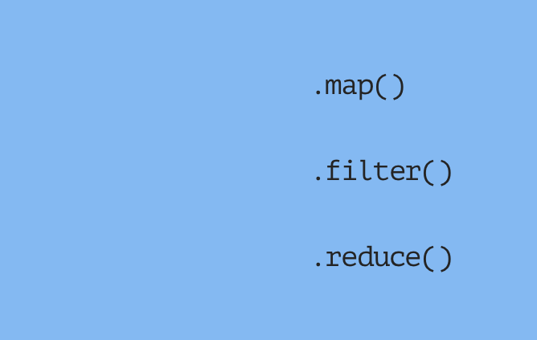

Working together
View
Workshop at Funda

This blog contains my research, notes from lectures and workshops related to the Web Development Minor I've participated in in 2020.
Workshop at Funda
Lecture by Sanne 't Hoofd
Lecture by Justus Sturkenboom
Research

Research
Research